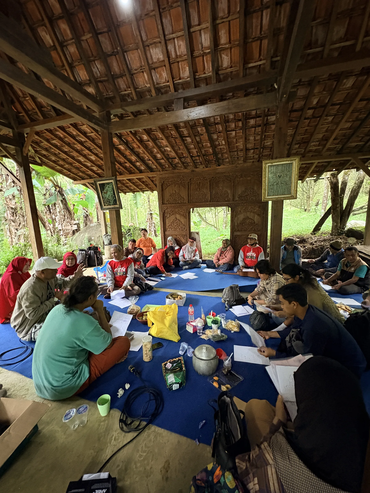
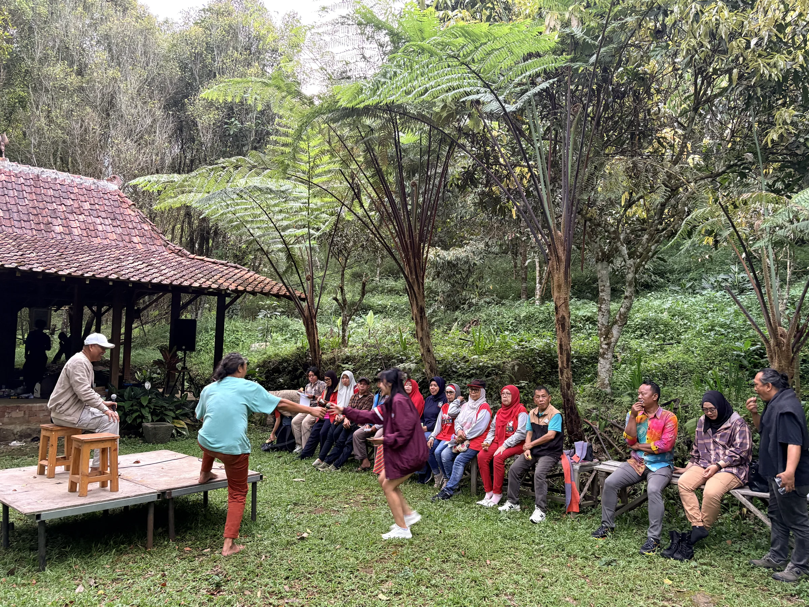

About KUDAKU
A living cultural food platform.
KUDAKU is an independent cultural food platform — born at Bumi Seni Tarikolot, designed to grow far beyond it.
Born in Kuningan.
KUDAKU begins at the foot of Mount Ciremai, in Desa Sukamukti, Kuningan, Jawa Barat — home of Bumi Seni Tarikolot, a forest-based cultural ecosystem with over a decade of grassroots practice.
What starts here is a conviction: that food is one of the deepest languages Indonesia speaks, and that it deserves a platform of its own.
A shared table for the whole archipelago.
KUDAKU envisions Indonesia meeting itself — and the world — through food: a durable cultural platform where taste, knowledge, encounter, creation, and care are practiced as one.
Make food a doorway.
To gather producers, cooks, scholars, artists, and communities around living food culture — and to turn every dish into a pathway into culture, people, nature, knowledge, and the future.

The dapur as cultural metaphor.
In the dapur — the kitchen — raw ingredients become nourishment, strangers become family, and knowledge moves quietly from elder hands to younger ones.
KUDAKU reads the nation through this room. The dapur is where a culture is transformed, cared for, gathered, and remembered. It is the smallest unit of a civilization, and the most intimate.

Initiated by Bumi Seni Tarikolot.
Bumi Seni Tarikolot is KUDAKU's birthplace, initiator, and physical home — a living laboratory where culture, nature, and community already meet every day.
KUDAKU is an independent platform that carries its own name and its own trajectory, with Bumi Seni Tarikolot as its initiator and home.
From one kitchen to the world.
KUDAKU grows in stages — each step widening the table without leaving the last one behind.
KUDAKU works throughout the year.
"Event berlangsung beberapa hari, tetapi platform KUDAKU bekerja sepanjang tahun." The flagship event marks one moment in a continuous cycle of work.